🏛️ Rozdział I - PON i korzenie walki niepodleglosciowej


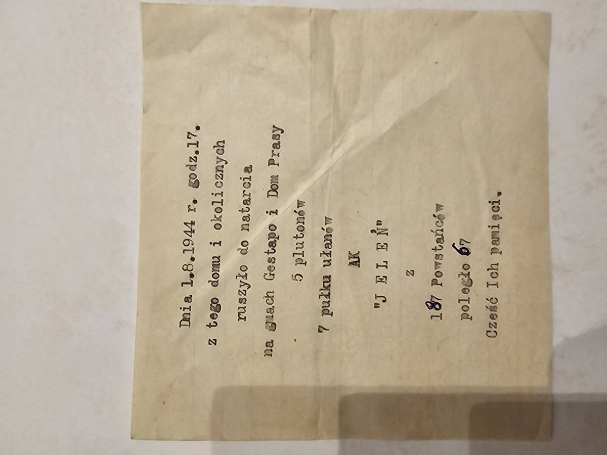
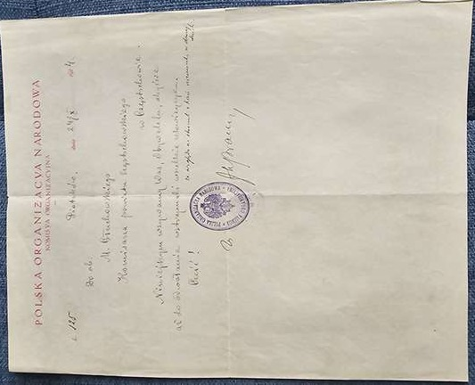
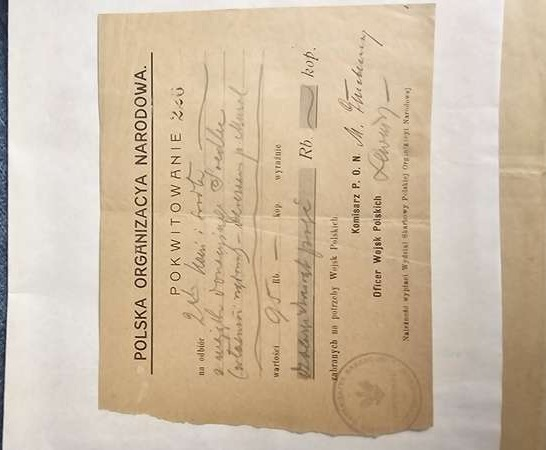
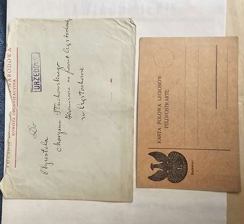
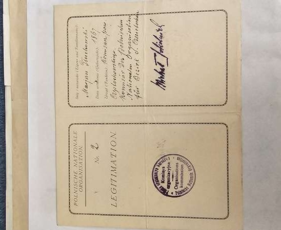
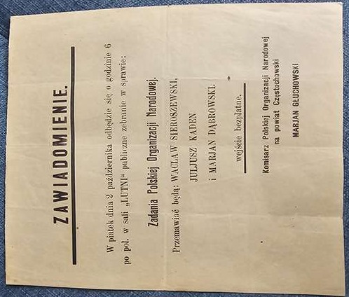
⚔️ Rozdział II - Siodemka i Legiony Polskie


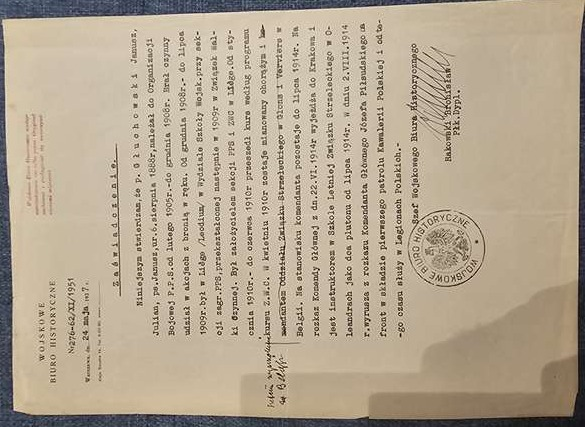
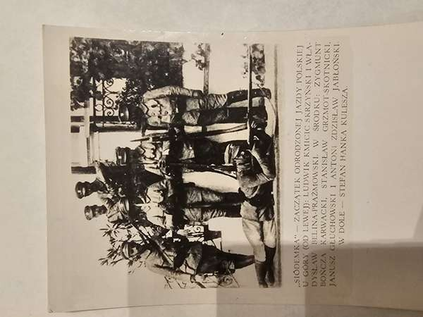
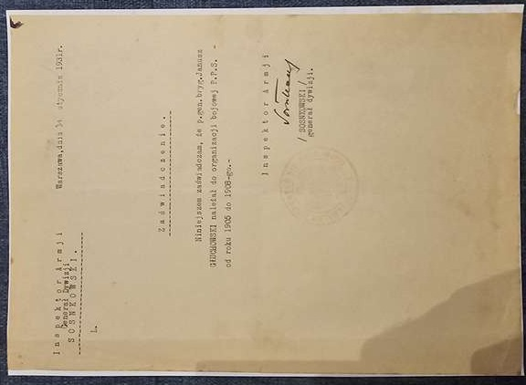
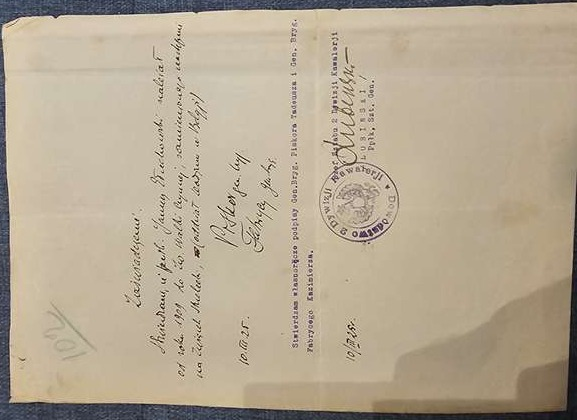
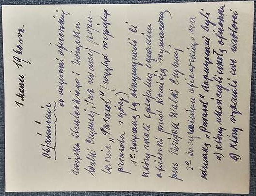
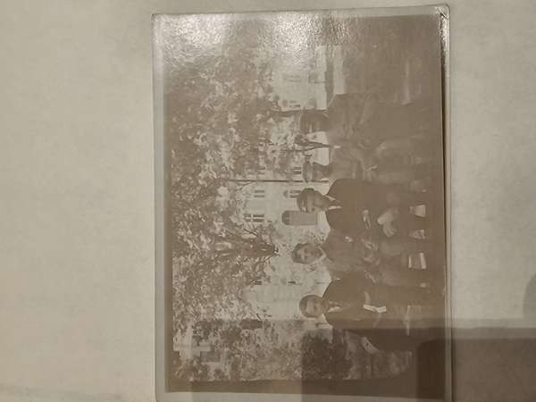
🦅 Rozdział III - II Rzeczpospolita -- od narodzin do wiceministra


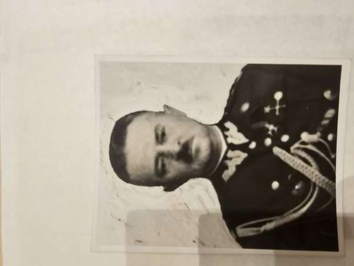
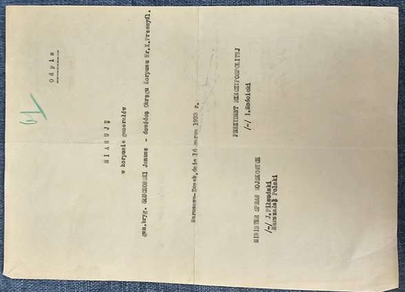
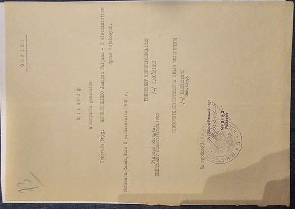
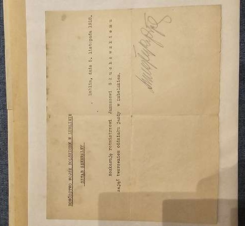
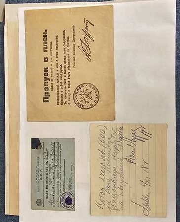
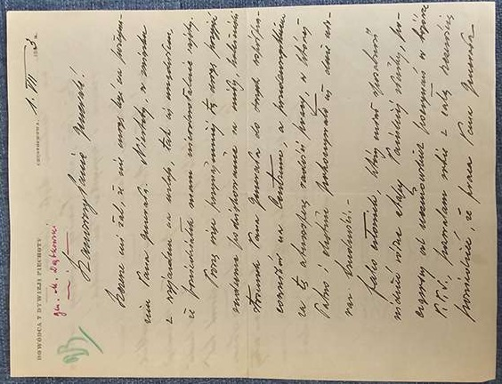
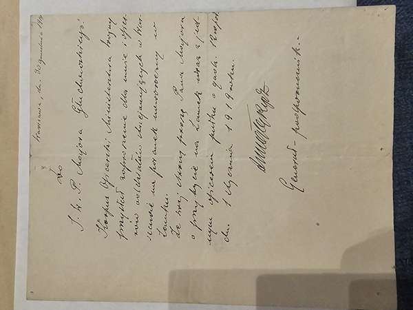
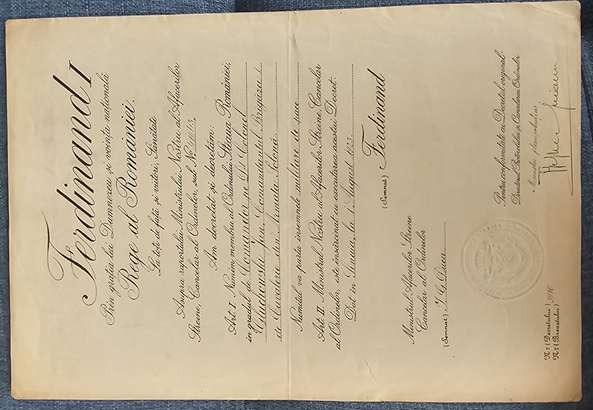
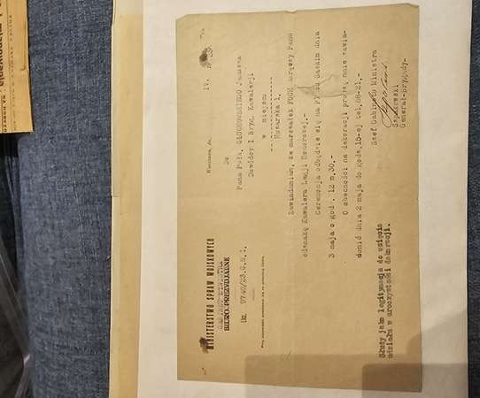

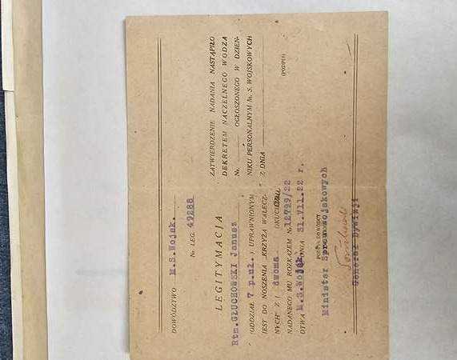
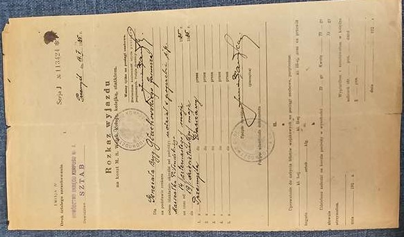
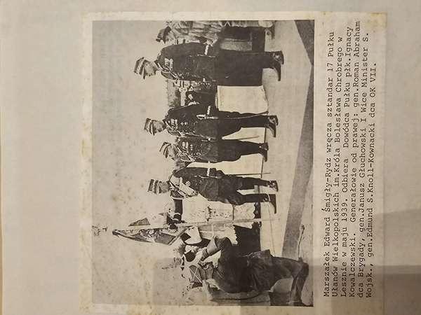
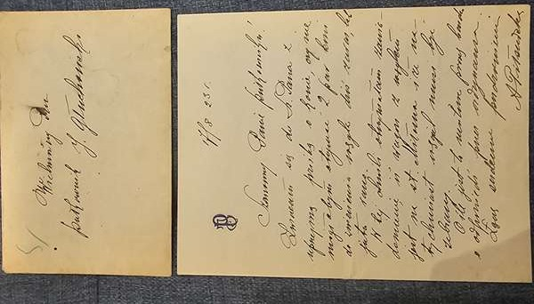
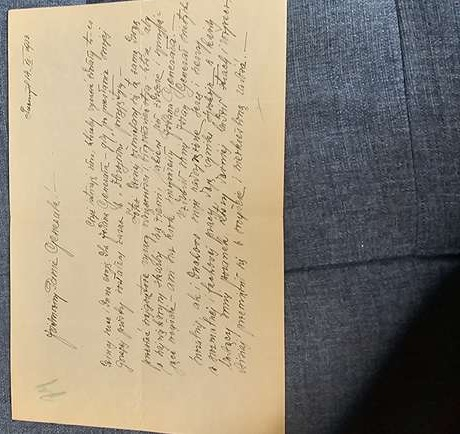
🎖️ Rozdział IV - Gen. Sosnkowski -- 50 lat przyjazni

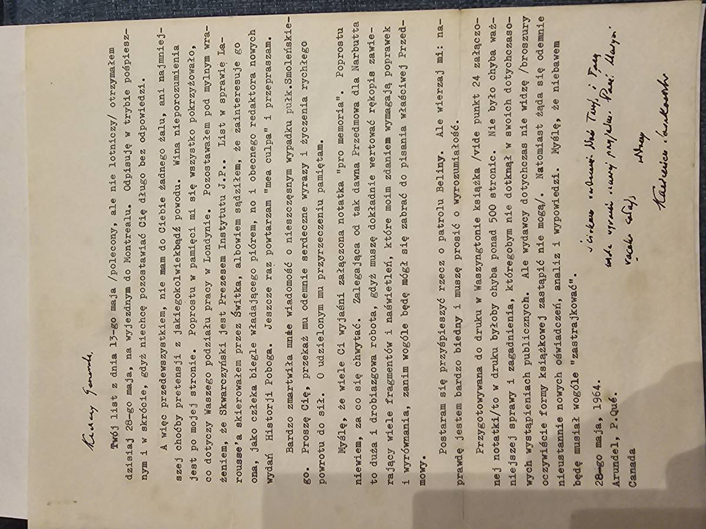


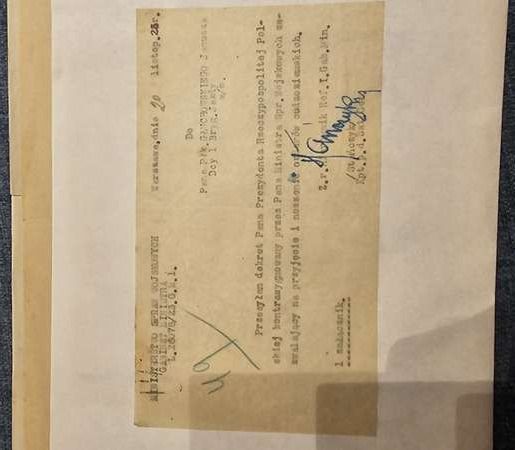
✡️ Rozdział V - Getto Lodzkie -- swiadectwo i odpowiedzialnosc


🐴 Rozdział VI - 7 Pulk Ulanow Lubelskich


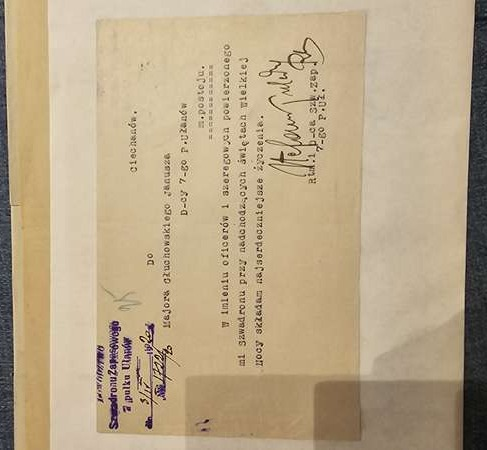
🏴 Rozdział VII - Krzysztof Andrzej Gluchowski -- historia kompletna


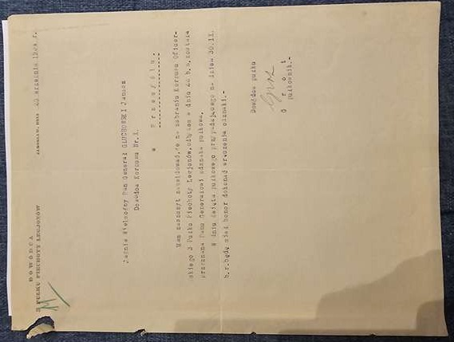
📜 Rozdział VIII - Album fotograficzny -- PSZ w Szkocji


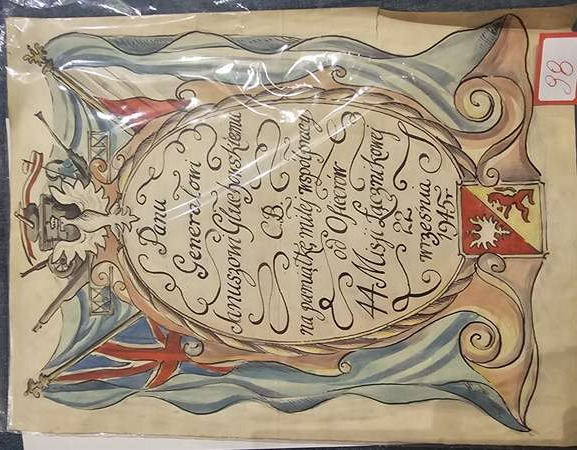
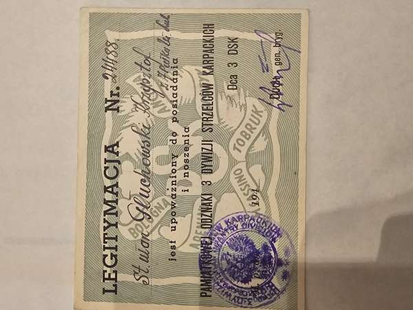
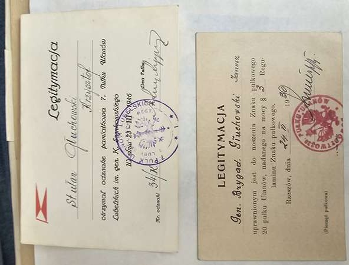
✉️ Rozdział IX - Seria 29z: Korespondencja jeniecka


📓 Rozdział X - Seria 29z: Dokumenty obozowe i pamietnik


🕊️ Rozdział XI - Seria 29z: Wspomnienia i wyzwolenie


🪪 Rozdział XII - Seria 29z: Dokumenty tozsamosci i repatriacja

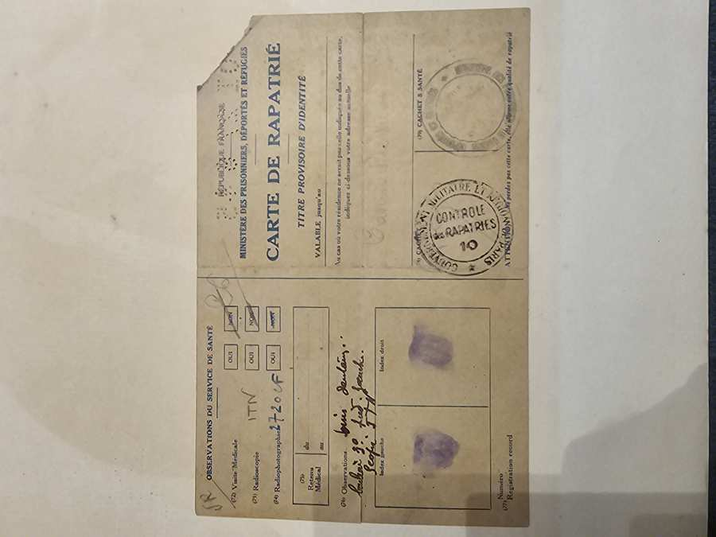


🏛️ Potencjalni nabywcy instytucjonalni
Muzeum Jozefa Pilsudskiego w Sulejowku
Muzeum Wojska Polskiego, Warszawa
Muzeum Powstania Warszawskiego
Muzeum POLIN, Warszawa
Yad Vashem, Jerozolima
USHMM (US Holocaust Memorial Museum), Waszyngton
Muzeum Tradycji 7 Pulku Ulanow Lubelskich
Muzeum Kawalerii, Grudziadz
Instytut Pamieci Narodowej (IPN)
Centralne Archiwum Wojskowe, Warszawa
Muzeum Historii Lodzi
National War Museum Scotland, Edinburgh
🔨 Domy aukcyjne (jeśli sprzedaż komercyjna)
DESA Unicum, Warszawa
Antykwariat Rara Avis, Kraków
Dom Aukcyjny Libra, Kraków
Sopocki Dom Aukcyjny
Rempex / Abbey House
📜 Proweniencja archiwum
Archiwum rodziny Głuchowskich - kompletna dokumentacja czterech pokoleń polskiej rodziny wojskowej. Zbiór przechowywany przez rodzinę, następnie przez Krzysztofa Głuchowskiego (syna brata generała), który wyemigrował do Brazylii, gdzie zmarł 16 maja 2020 roku. Po jego śmierci archiwum trafiło na aukcje w Brazylii (Acervo Raro Leilões).
Podsumowanie wyceny
(148395 - 367558 EUR • 135765 - 336276 USD)
50 obiektów klasy A (muzealna) • 45 obiektów klasy B/B+
📊 Metodologia wyceny -- badanie rynku
Niezalezna wycena oparta na zrealizowanych transakcjach aukcyjnych 2019-2026. Przebadano platformy: RR Auction (USA), Heritage Auctions (USA), DESA Unicum (PL), OneBid/WDA-MiM (PL), eMedals (CA), Invaluable (USA), Kedem Auction House (IL), Bonhams (UK), Allegro archiwum (PL), PCGS ValueView, CoinStrail, Numista.
Kluczowe punkty cenowe (zrealizowane):
$963 USD -- fotografia z podpisem (RR Auction, maly format 3.75x5")
Bylo to DRUGIE podpisane zdjecie Pilsudskiego w historii RR Auction. Dyplom urzedowy z pelnym podpisem > fotografia: mnoznik x3-x8.
10 Pf kupon: sr. 960 USD / rekord 17,250 PLN
20 Mk aluminum: sr. 1,800 USD / rekord 20,000 PLN
WDA-MiM, Marciniak Dom Aukcyjny. Kupony pocztowe rzadsze niz monety. Komplet z proweniencja = mnoznik x3-x5.
Koperta poczty polowej: 800-3,000 PLN
Legitymacja AK oryginal: 2,000-8,000 PLN
OneBid, Allegro archiwum. Przepustki AK -- ekstremalnie rzadkie, brak porownawczych transakcji. Muzeum PW kupowalo listy na aukcjach (Dusseldorf 2008).
$17,827 USD -- pamietnik RAF z Stalag Luft III (Invaluable)
Pamietnik 15-letniego AK-owca (GL-111) -- jeszcze rzadszy kontekst niz Stalag Luft III. 15 kart obozowych, Stalag VIJ, grudzien 1944.
100-480 PLN -- sam medal (WCN e-aukcje)
Z legitymacja + proweniencja generala = mnoznik x20-x50. GL-021 (KW generala) = 3,000-8,000 PLN.
+50-80% ponad sume jednostkowa
4 generacje, 95 obiektow, 12 rozdzialow, ciagla proweniencja od 1914 do 1946. Instytut Pilsudskiego (NY), Hoover Institution -- precedensy zakupu archiwow.
Dlaczego te ceny?
1. Autograf Pilsudskiego (GL-010, GL-039) -- Pilsudski prawie nigdy nie podpisywal dokumentow dla osob prywatnych. RR Auction sprzedalo tylko DWIE pozycje z jego podpisem w historii firmy. Dyplom Krzyza Legjonowego nr 115 z pelnym podpisem na dokumencie urzedowym jest wart wielokrotnosc zdjecia portretowego ($963). Estymacja 25,000-60,000 PLN odzwierciedla ekstremalnie ograniczona podaz.
2. Legitymacja AK nr 1112 (GL-067) -- Oryginalna legitymacja AK z Powstania Warszawskiego to obiekt klasy muzealnej. Na rynku pojawiaja sie glownie wtorniki i kopie z archiwow ZBOWID. Oryginal z pieczecia, pseudonimem i przydzialem do plutonu -- w rekach prywatnych -- jest UNIKATEM. Muzeum Powstania Warszawskiego posiada ok. 400 legitymacji, ale wiekszosc z powojennych archiwow. Estymacja 50,000-120,000 PLN.
3. Pamietnik obozowy (GL-111) -- Pamietnik prowadzony przez 15-letniego jenca w Stalagu VIJ, 15 kart zagestego pisma olowkiem. Porownanie: pamietnik RAF z Stalag Luft III sprzedany za $17,827 USD (~84,000 PLN). Pamietnik dziecka-zolnierza AK jest jeszcze rzadszy. Estymacja 30,000-70,000 PLN.
4. Getto Lodzkie (GL-041) -- Kupon pocztowy 10 Pf to fizyczny relikt Holocaustu. Srednia cena na rynku numizmatycznym: 960 USD. Rekord WDA-MiM: 17,250 PLN. ALE: ten kupon ma udokumentowana proweniencje (rodzina Gluchowskich od lat 40.), 26 lat poszukiwan muzeum (1958-1984), i korespondencje z Ambasada Izraela. To nie jest moneta bez historii -- to dokument-swiadectwo.
Wartosc archiwum jako calosci
Suma jednostkowa: 638,100 - 1,580,500 PLN
Z premia za kompletnosc (+50-80%):
(222,593 - 661,604 EUR • 203,648 - 605,297 USD)
Katalog Naukowy szacowal: 600,000 - 1,200,000+ PLN